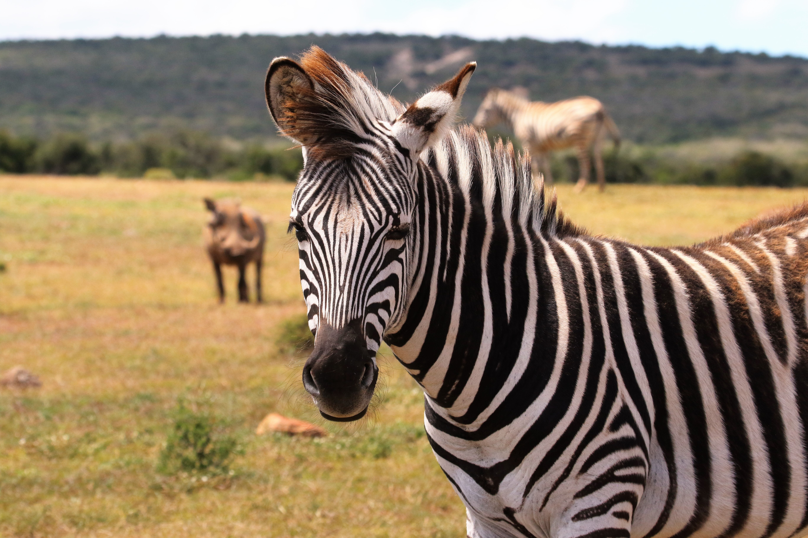
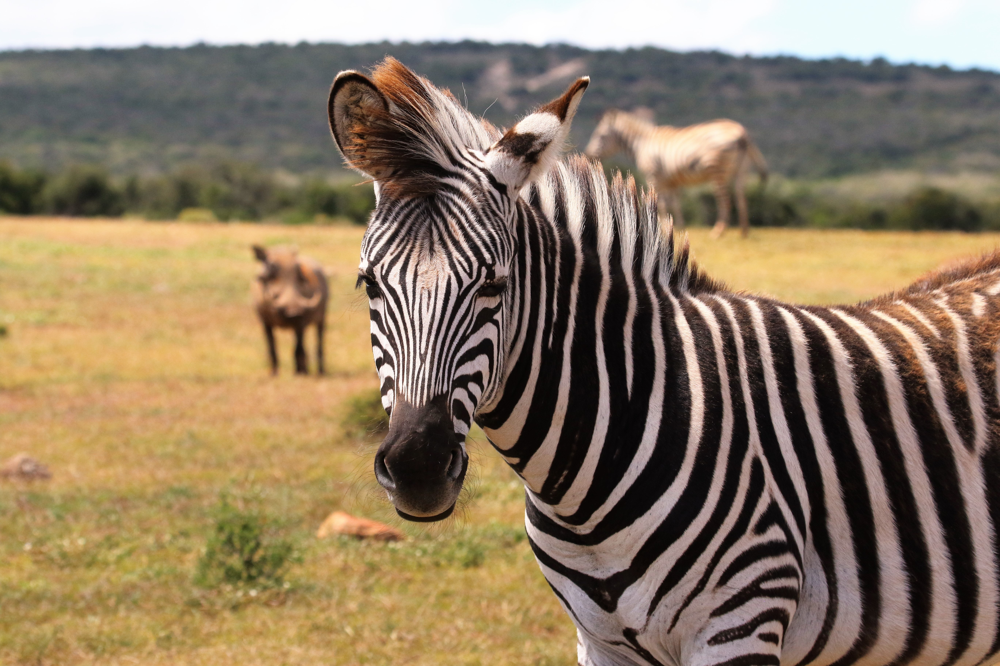

TIGER
The tiger is a long-ranging species, and individuals disperse over distances of up to 650 km (400 mi) to reach tiger populations in other areas.Radio-collared tigers in Chitwan National Park started dispersing from their natal areas earliest at the age of 19 months. Four females dispersed between 0 and 43.2 km (0.0 and 26.8 mi), and 10 males between 9.5 and 65.7 km (5.9 and 40.8 mi). None of them crossed open cultivated areas that were more than 10 km (6.2 mi) wide, but moved through forested habitat. Adult tigers lead largely solitary lives. They establish and maintain territories but have much wider home ranges within which they roam. Resident adults of either sex generally confine their movements to their home ranges, within which they satisfy their needs and those of their growing cubs. Individuals sharing the same area are aware of each other's movements and activities


 
